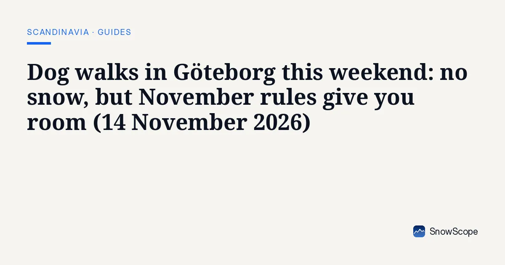

Dog walks in Göteborg this weekend: no snow, but November rules give you room (14 November 2026)
Göteborg has no snow for its dogs: the stations at Askim, Kållered and Härryda all measured 0 cm on Friday, and the weekend is mild, up to about 10 °C on Saturday. But November is a good month for dog walks here, because two of the city's seasonal leash rules are off.
See the live snow forecast for Göteborg in the SnowScope appSnow depth, powder alerts and the 3D map, free.
What the rules say in November
The city asks for a lead in parks and plantings from 1 April to 30 September, and in nature from 1 March to 20 August. Both are outside those dates now. A dog off the lead must still be under control, and some places need a lead all year: market squares, bathing places, cemeteries, near schools and playgrounds, and Slottsskogen, except inside its fenced dog yard.

The fenced dog yards
Göteborg has 12 fenced hundrastgårdar, cleaned once a week. Among the largest are Keillers park, about 2000 m², and Hinsholmskilen, about 1750 m². Fjärdingsparken has 900 m². Slottsskogen's yard is near Majvallen in the western part of the park.
A bigger walk: Delsjöområdet
Delsjöområdet, on the eastern edge of the city, is a recreation area of about 1370 hectares of forest and lakes. In November the general rule for nature applies there: no seasonal leash requirement, but your dog must stay under control. Expect wet autumn paths rather than snow, and rain on Monday, roughly 9 to 16 mm.
Tips for skiers
- Wet leaves and mud: a towel and a paw rinse at the door after Delsjön.
- Other walkers and joggers share the lake paths: call the dog in when people pass.
- For real snow with a dog this weekend, you would have to drive far north: the nearest white belt is in Dalarna.
More maps (external sites)
References and credits
- SMHI, open meteorological observations (snow depth, daily) www.smhi.se/data/meteorologi/ladda-ner-meteorologiska-observationer
- Göteborgs Stad, rules for dog owners goteborg.se/wps/portal/start/uppleva-och-gora/parker-och-lekplatser/for-dig-som-ar-hundagare/regler-for-hundagare
- Göteborgs Stad, fenced dog yards (hundrastgårdar) goteborg.se/wps/portal/start/uppleva-och-gora/parker-och-lekplatser/for-dig-som-ar-hundagare/hundrastgardar
- Göteborgs Stad, Delsjöområdet nature area goteborg.se/wps/portal/start/uppleva-och-gora/parker-och-lekplatser/naturomraden/hitta-naturomraden?id=3740
- Open-Meteo, weather forecast data (ECMWF and ICON models) open-meteo.com/
About these numbers
Snow depth today: measured at weather stations on the morning of 13 November 2026 (SMHI); a station reports the snow on its own small plot, so a few kilometres away and a hundred metres higher the ground can look different. Usual depth for the date: SnowScope snow history, 46 past winters (1980-81 to 2025-26), a model of the past at the city's height, not a station record. Weekend: two weather models (ECMWF IFS and DWD ICON, read through Open-Meteo), given as a range. Places and rules: the official pages listed below.
Cite this report
For research, teaching or the press: the numbers and charts are free to reuse under CC BY 4.0 with this citation.
SnowScope (2026), Dog walks in Göteborg this weekend: no snow, but November rules give you room (14 November 2026), https://snowscope.app/blog/en/2026/11/goteborg-dog-walks-weekend-14-november-2026.html, accessed 2026-11-14
SnowScope (Atlas Labs). (2026, November 14). Dog walks in Göteborg this weekend: no snow, but November rules give you room (14 November 2026). SnowScope snow reports. https://snowscope.app/blog/en/2026/11/goteborg-dog-walks-weekend-14-november-2026.html
BibTeX
@misc{snowscope2026goteborgdogwalksweekend1,
author = {{SnowScope (Atlas Labs)}},
title = {Dog walks in Göteborg this weekend: no snow, but November rules give you room (14 November 2026)},
year = {2026},
month = nov,
howpublished = {\url{https://snowscope.app/blog/en/2026/11/goteborg-dog-walks-weekend-14-november-2026.html}},
note = {Published 2026-11-14 13:29 UTC; accessed 2026-11-14}
}· CC BY 4.0 · Methods, data and tools →
Follow Göteborg
Free: a message when fresh snow is coming, and the forecast every morning.
More snow reports

Riksgränsen dominates Scandinavia with 173 cm of snow depth measured on 16 November, holding far more mountain water than any rival resort in the region.

On 13 November 2026 the weather stations in Stockholm and Helsinki measured 0 cm of snow while Sälen had 45 cm and Umeå 20 cm. Height, the sea, the city and the track of the storms explain it, with numbers from 46 past winters.

December snow odds from 46 winters and checked day prices: Ski Cooper $49, Les 3 Vallées €75.70, Oukaïmeden no official tariff. Where a cheap December ski day works.